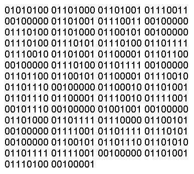
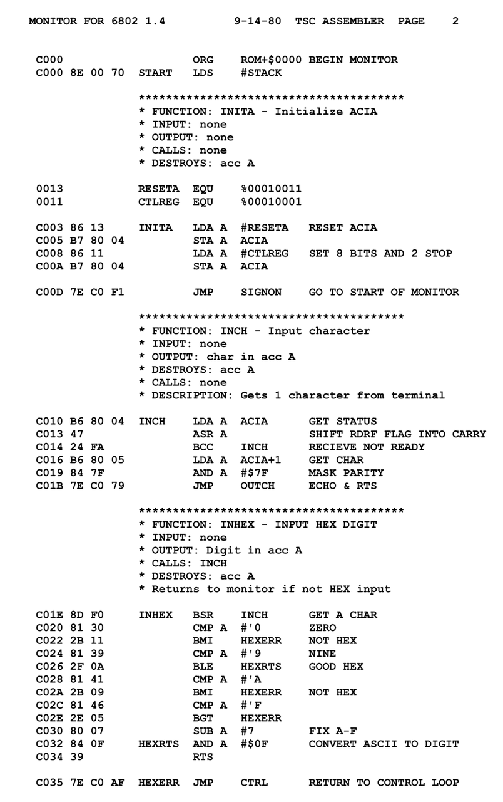
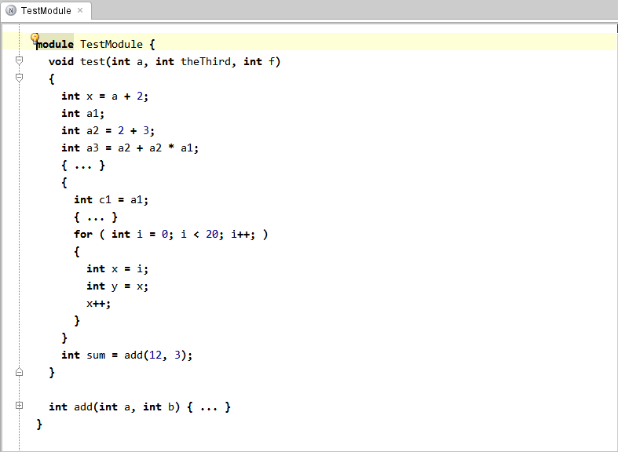
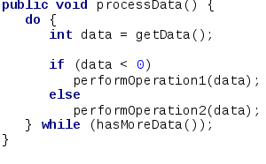

1. ¿Por qué aprender a programar?
Unidad 1
Todos nos presentamos.
¿Por qué quieren aprender a programar?
Entender el mundo que nos rodea, ya que hoy y más a futuro, todo funcionará con programas y sistemas.
Posibilidad de mejorar laboralmente, ya sea en un nuevo empleo o sumando capacidades en el actual.
¿Qué es programar?
Programar es comunicar la solución a un problema utilizando un lenguaje que pueda entender tanto la computadora, como así también otros programadores.
Para programar, es necesario una combinación de conocimiento técnico, creatividad y capacidad de abstracción.
¿Cómo funciona un programa de la computadora?
Los circuitos internos de una computadora, funcionan mediante electricidad, la cual es representada por 0 y 1.
Reciben información de entrada, la procesan, la almacenan y la devuelven como salida.
Las instrucciones lógicas básicas que procesan la información, también se nombran con un código binario, el cual la computadora entiende unívocamente.
-
Los primeros lenguajes de programación, requerían indicarle a la computadora las instrucciones mediante su código binario, por ejemplo 11011001 o 01101010.
 -
Luego se crearon los lenguajes ensambladores, los cuales le dieron un nombre más fácil de recordar a esas instrucciones. Esto hizo los programas más fáciles de escribir, de leer y entender.
 -
A partir de allí, surgieron múltiples lenguajes de alto nivel, los primeros fueron Fortan y Cobol, y luego C, Smalltalk, Java, Python, e innumerables más al día de hoy.
 Un programa es un archivo de texto, que contiene el código que debe ejecutar la computadora.
Debe ser sintácticamente correcto, de lo contrario la computadora dará error.
Ese programa es procesado por un compilador o un intérprete, el cual traduce finalmente a código binario las instrucciones que le dimos a la computadora, para que pueda ser ejecutado.
Ver los siguientes videos sobre el tema:
Instalación de las utilidades necesarias
Acá tienen toda la información: